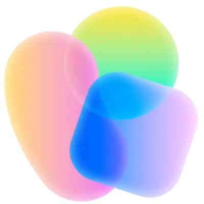

创建文本与图片节点，并依次连接。生成时会读取上游文本和图片。
正在检查服务…
未配置的模型需要在本机服务的 .env 中设置 API Key 和供应商模型 ID，然后重启服务。详细配置见项目 README；密钥不会保存到浏览器。
当前画布会先保存在此浏览器中。创建后可从项目菜单的“切换画布”返回。
画面按顺序播放；音频按开始时间混入。所有裁剪保留原素材。
添加图片、视频或音频开始剪辑。
拖动环绕 · 滚轮缩放 · 右键平移
场景会随项目自动保存。
画布保存在当前浏览器。导出项目文件可备份或迁移到其他设备。
这是本次编码后的实际视频文件。可播放检查，再加入画布继续创作。